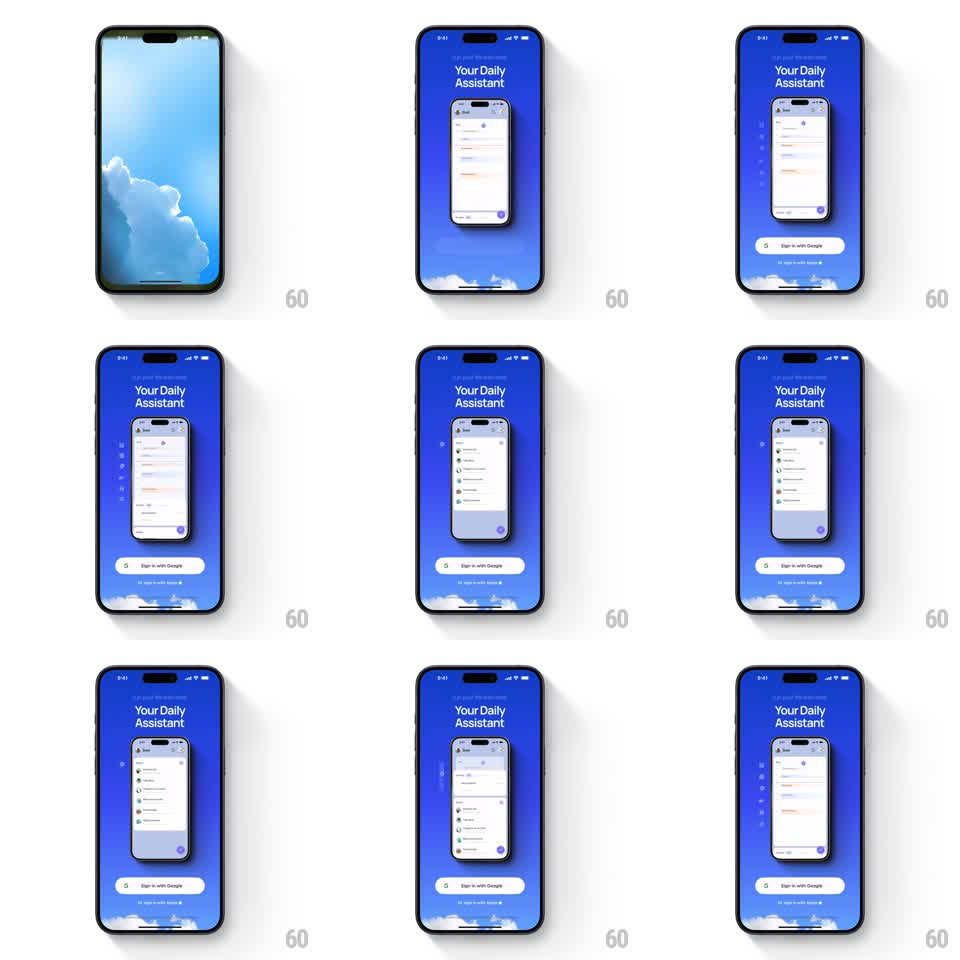

Media
Frame-by-frame

Rebuild this animation 1:1: Hero's onboarding intro - a central phone mockup cycles through app screens (chat, tasks, lists) against a blue cloud gradient while "Your Daily Assistant" sits above and the Google/Apple sign-in buttons slide up below.

Rebuild this animation 1:1: Hero's onboarding intro - a central phone mockup cycles through app screens (chat, tasks, lists) against a blue cloud gradient while "Your Daily Assistant" sits above and the Google/Apple sign-in buttons slide up below. ## Integration Integration: stack-agnostic spec - springs given as stiffness/damping, timed motions as duration + curve; map every value to your framework and animation library of choice. ## Scene Full-bleed blue gradient background (deep blue top, lighter toward bottom) with soft white clouds along the bottom edge. White two-line title "Your Daily Assistant" top-center. Center: a floating phone mockup whose screen crossfades through different app views (chat conversation, task list, message list). Bottom: white "Sign in with Google" pill, dark "Sign in with Apple" pill beneath it. ## Motion spec Pattern: screen-cycling device mockup with staged entrance. - Entrance: background gradient fades in (300ms); title fades down (translateY -10pt -> 0, 300ms); the phone rises from below-center (translateY 60pt -> 0, spring ~280/20, 500ms); the two sign-in buttons slide up in stagger (translateY 30pt -> 0, 300ms, Google first, Apple 100ms later). - Screen cycling: every 1.6s the phone's screen crossfades to the next app view (opacity + slight scale 1.02 -> 1, 400ms), looping through 3-4 screens. - The phone idles with a gentle float (translateY +-6pt, 3.5s sine) and a barely-there tilt (rotate +-1deg). - Clouds drift slowly along the bottom (pan, 25s loop). ## Calibration - Screen crossfades never disturb the phone's float - the mockup body and its screen are separate layers. - Buttons are full-width pills with service logos; Google is white with dark text, Apple is near-black with white text. ## Reduced motion The phone shows one static screen; entrance animations become simple fades (250ms). ## Don't miss - The title is two stacked lines, white, medium weight - not a single line. - Keep the crossfade inside the phone's screen mask with rounded corners.